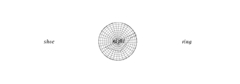

|
"The Very Essence of Poetry," page 3  |
|
The stark silence of My name is Captain, Captain. is not an absence of sound nor a numbing white noise but rather the constant sound of silence that intensifies the other senses and skills engaged in the act of reading. A screen with intersecting circles presents a silent conversation between the sexes that hints at marriage, death, and disappointment. When words take flight and move between the circles, it is as if the circles are speaking to each other: ying and yang, male and female, fragments and wholeness. Sound and silence prove intimately interconnected to vision and visuals. The trail of smoke behind the airplane forms the words "dit dah dit dah" presenting the sound of a clicking Morse code apparatus. A later screen displays the streaming text of Morse code, the dots and dashes that in their movement resemble the zeros and ones of computer code. The focus on Morse code is pivotal, not only in connection to the theme of aviation, but because Morse code encapsulates the power of visual images to present and signify sound and significance. Just as you hear the poetry aloud in your head while reading, so too does Morse code's simple system of dots and dashes embody and denote sound. Further, both Morse and computer code require the use of a machine (the Morse code apparatus and telegraph wire or the computer program) to read their code and produce their meaning. The poem provokes an understanding of reading as a collaboration between actions on the part of the reader (seeing, hearing, physically interacting and decoding) with the technology of reading machines. The poem itself remediates (in the Bolter and Grusin sense) other technologies for reading and viewing. A section of the poem is read through the interface of the children’s toy, a Viewfinder; the reader peeps into the Viewfinder’s eyeholes to catch a glimpse of a narrative or visual clue behind or beyond the partially-visible, sepia photograph of early aviators that is visible. Instead of narrative elaboration, this vision exposes the layers of mediation and interface that participate in the act of reading: the photograph, the Viewfinder, the Flash animation, and the computer. My name is Captain, Captain. collapses viewing technologies to construct the literal and literary context of reading through machines. The reader not only encounters a poem on a computer screen but also the development of her cyborgic sight. As the poem says, “our hands must keep up with our instruments.” |